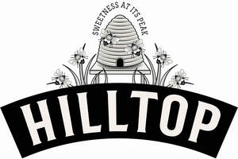

Trade Mark Journal No.2025/038 19 September 2025
UK00004230700 8 July 2025 (3,5,20,21,29,30,32,33,35)

- Class 3
- Lip balm; Lip balm [non-medicated]; Lip balms; Lip balms [non-medicated]; Lip cosmetics; Hand and body butter; Hand cream; Hand creams; Hand lotion (Non-medicated -); Hand lotions; Hand soap; Hand soaps; Foot balms (Non-medicated -); Body and facial butters; Body and facial creams [cosmetics]; Body cream; Body cream for cosmetic use; Body cream soap; Body creams; Body creams [cosmetics]; Body deodorants; Body deodorants [perfumery]; Body gels; Body gels [cosmetics]; Body moisturisers; Body soap; Beard balm; Beard care preparations; Beard oil; Beauty balm creams; Beauty care cosmetics; Beauty care preparations; Beauty creams; Beauty creams for body care; Moisturiser; Moisturisers; Moisturisers [cosmetics]; Moisturising body lotion [cosmetic]; Moisturising creams; Moisturising creams, lotions and gels; Moisturising gels [cosmetic]; Moisturising skin creams [cosmetic]; Moisturising skin lotions [cosmetic]; Moisturizers; Moisturizing body lotions; Moisturizing creams; Moisturizing milk; Moisturizing preparations for the skin; Moustache wax; Mustache wax; Skin balms [cosmetic]; Skin balms (Non-medicated -); Skin care (Cosmetic preparations for -); Skin care cosmetics; Skin care creams [cosmetic]; Skin care creams, other than for medical use; Skin care lotions [cosmetic]; Skin moisturiser; Skin moisturisers; Skin moisturizer; Skin moisturizers; Skin moisturizers used as cosmetics; Skin soap; Soap; Soaps; Soaps and gels; Soaps for body care; Soaps for personal use.
- Class 5
- Nutritional supplement energy bars; Nutritional supplement meal replacement bars for boosting energy; Nutritional supplements; Nutritional supplements for human consumption; nutritional supplements in the form of bars, gels, beverages and preparations for making beverages; vitamin and mineral supplements; vitamin and mineral supplements in the form of bars, gels, beverages and preparations for making beverages; nutritional supplements for human consumption in the form of bars, gels, beverages and preparations for making beverages.
- Class 20
- Honeycombs.
- Class 21
- Food storage containers.
- Class 29
- Coconut butter; Coconut milk; Coconut milk [beverage]; Coconut milk for cooking; Coconut milk for culinary purposes; Coconut milk used as beverage; Coconut milk-based beverages; Coconut oil; Coconut oil and fat [for food]; Coconut oil for food; Peanut butter; Butter (Peanut -); Butter (Chocolate nut -); Butter made of nuts; Cashew nut butter; Chocolate nut butter; Jams; Blackberry jam; Blueberry jams; Cranberry jam; Fruit jams; Ginger jam; Jellies, jams, compotes, fruit and vegetable spreads; Plum jam; Raspberry jam; Rhubarb jam; Strawberry jam; Proteinaceous foodstuffs; proteinaceous preparations for human consumption; proteinaceous preparations in the form of bars, gels, beverages and preparations for making beverages; protein bars; proteinaceous food bars; proteinaceous food products for use during exercise; fruit-based energy food bars for use during exercise; proteinaceous energy bars; fruit and cereal bars; proteinaceous snack bars; preserved, dried and cooked fruits; jellies; Vegetable spreads; Peanut spread; Hazelnut spread; Hazelnut spreads; Fruit spreads; Fruit spread; Jellies [bread spreads]; Nut-based spreads; Nut paste spreads; Garlic-based spreads; Vegetable-based spreads; Chocolate nut butter; Spreads consisting mainly of fruits; Jams; Ginger jam; Fruit jams; Strawberry jam; Blackberry jam; Cranberry jam; Rhubarb jam; Raspberry jam; Plum jam; Blueberry jams; Jellies, jams, compotes, fruit and vegetable spreads; Edible nuts; Candied nuts; Seasoned nuts; Salted nuts; Prepared nuts; Nuts, prepared; Roasted nuts; Preserved nuts; Spiced nuts; Ground nuts; Nut oils; Roast nuts; Shelled nuts; Processed nuts; Dried nuts; Nut toppings; Blanched nuts; Flavored nuts; Flavoured nuts; Prepared torreya nuts; Candied pine nuts; Nuts being preserved; Nuts being cooked; Butter (Chocolate nut -); Cashew nut butter; Prepared pine nuts; Prepared macadamia nuts; Cashew nuts (Prepared -); Processed betel nuts; Processed tiger nuts; Butter made of nuts; Pastes made from nuts; Nut-based snack foods; Nut oils for food; Nut-based food bars; Mixtures of fruit and nuts; Nut-based meal replacement bars; Snack foods based on nuts; Fruit- and nut-based snack bars; Nut and seed-based snack bars; Processed fruits, fungi, vegetables, nuts and pulses; Organic nut and seed-based snack bars; Snack mixes consisting of dehydrated fruit and processed nuts; Snack mixes consisting of processed fruits and processed nuts; Cranberry sauce [compote]; Apple sauce (compote); Vegetables pickled in soy sauce; Beans cooked in soy sauce (Kongjaban).
- Class 30
- Honey; Honey [in packaged goods], honey [liquid], Set honey, Comb honey, Cut comb honey, bee pollen, royal jelly; propolis; Agave syrup for use as a natural sweetener; Agave syrup [natural sweetener]; Syrup for food; Syrup of molasses for food; Syrups and treacles; Honey; Honey [for food]; Herbal honey lozenges [confectionery]; Natural honey; Natural ripe honey; Sweet spreads [honey]; Candies (Non-medicated -) with honey; Manuka honey; Sweets (Non-medicated -) being honey based; Honeys; Raw honeycombs; Chocolate spreads; Chocolate spreads containing nuts; Chocolate spreads for use on bread; Chocolate-based spreads; Peanut butter confectionery chips; Confectionery containing jam; Maple syrup; Cereal bars and energy bars; Cereal based energy bars; Sweets; Sweets (Non-medicated -); Sweets (Non-medicated -) being honey based; Sweets (Non-medicated -) in the nature of sugar confectionery; Sweets (candy), candy bars and chewing gum; Sweets [candy]; Gum sweets; Fruit-based food products for use during exercise; fruit-based energy food bars for use during exercise; food bars for athletes; cereal based energy bars; raw and cold pressed fruit energy bars; energy bars based with honey; fruit and cereal bars; fortified fruit and cereal bars; confectionery bars; fortified confectionery bars; carbohydrate preparations for human consumption for nutritional use; maltodextrins for human consumption for nutritional use; preparations made from cereals; confectionery bars; proteinaceous confectionery bars; Table syrup; Topping syrups; Flavoring syrup; Molasses syrup; Corn syrup; Pancake syrup; Maple syrup; Chocolate syrups; Golden syrup; Yacon syrup; Topping syrup; Chocolate syrup; Flavouring syrups; Syrup for food; Syrups and treacles; Glucose syrups for food; Agave syrup [natural sweetener]; Molasses syrup for food; Starch syrup [for food]; Glutinous starch syrup (mizu-ame); Molasses syrup for culinary purposes; Starch syrup for culinary purposes; Syrup of molasses for food; Powdered starch syrup [for food]; Corn syrup for culinary purposes; Agave syrup for use as a natural sweetener; Glucose syrup for use as a preservative for food; Chocolate syrups for the preparation of chocolate based beverages; Fructose syrup for use in the manufacture of foods; Glucose syrup for use as a sweetener for food; Glucose syrup for use in the manufacture of foods; Glucose syrup for use as a fermenting aid for food; Glucose syrup for use as a gelling agent for food; Glucose syrup for use as a texture improver for food; Chocolate spreads; Chocolate spread; Chocolate-based spreads; Chocolate spreads containing nuts; Chocolate spreads for use on bread; Sandwich spread made from chocolate and chocolates; Chocolate candies; Chocolate confections; Chocolate desserts; Chocolate bunnies; Chocolate sauces; Aerated chocolate; Chocolate truffles; Mousses (Chocolate -); Chocolate fudge; Chocolate sweets; Chocolate coating; Chocolate beverages; Chocolate wafers; Chocolate mousses; Chocolate brownies; Liqueur chocolates; Chocolate biscuits; Imitation chocolate; Dairy chocolate; Chocolate eggs; Chocolate pastries; Chocolate waffles; Chocolate confectionary; Chocolate topping; Chocolate sauce; Chocolate extracts; Chocolate cakes; Chocolate cake; Hot chocolate; Chocolate pastes; Chocolate creams; Chocolate coffee; Chocolate flavourings; Chocolate shells; Substitutes (Chocolate -); Chocolate bars; Milk chocolates; Chocolate vermicelli; Chocolate confectionery; Sweet spreads [honey]; Mayonnaise-based spreads; Chocolate flavoured beverages; Chocolate flavoured confectionery; Chocolate-based bars; Chocolate flavoured coatings; Chocolate based fillings; Beverages (Chocolate-based -); Chocolate based drinks; Chocolate coated biscuits; Confectionery chocolate products; Dairy-free chocolate; Chocolate-coated bars; Deep chocolate cake made with chocolate sponge; Chocolate for toppings; Chocolate-based beverages; Beverages containing chocolate; Milk chocolate teacakes; Chocolate covered cakes; Chocolate caramel wafers; Chocolate covered biscuits; Milk chocolate bars; Chocolate confectionery products; Filled chocolate bars; Chocolate coated nuts; Drinks containing chocolate; Chocolate-coated nuts; Chocolate-covered nuts; Hot chocolate mixes; Vegan hot chocolate; Drinks flavoured with chocolate; Chocolate decorations for cakes; Beverages made with chocolate; Drinks prepared from chocolate; Chocolate with Japanese horseradish; Chocolate based products; Chocolate coated fruits; Chocolate drink preparations; Nonmedicated chocolate; Chocolate covered pretzels; Chocolate topped pretzels; Chocolate with alcohol; Marshmallow filled chocolates; Chocolate-coated berries; Half covered chocolate biscuits; Drinks based on chocolate; Chocolate confectionery containing pralines; Sweets; Candies [sweets]; Mousse (sweet); Caramels [sweets]; Peppermint sweets; Sugarless sweets; Sugarfree sweets; Boiled sweets; Gum sweets; Sweets (Peppermint -); Sweets [candy]; Sweets (Non-medicated -) being acidulated caramel sweets; Sweets (Non-medicated -); Sweet potato starch; Sweet dumplings (dango); Xylitol-sweetened sweets; Mint-based sweets; Sweet pickle [condiment]; Sugar-free sweets; Non-medicated sweets; Foamed sugar sweets; Sweet and sour sauce; Sweet glazes and fillings; Chewing sweets (Non-medicated -); Gum sweets (Non-medicated -); Biscuits [sweet or savoury]; Tarts [sweet or savoury]; Panned sweets (Non-medicated -); Pies [sweet or savoury]; Mint flavoured sweets (Non-medicated -); Mint based sweets [non-medicated]; Sweets (Non-medicated -) being acidulated; Sweet biscuits for human consumption; Korean traditional pressed sweets (Dasik); Bread with sweet red bean; Sweet potato starch for food; Songpyeon [half-moon-shaped rice cakes with sweet or semi-sweet fillings]; Sweets (Non-medicated -) in compressed form; Bars of sweet jellied bean paste; Half-moon-shaped cake of rice containing sweet or semi-sweet fillings (songpyeon); Sal ammoniac liquorice sweets (Non-medicated -); Sweets (Nonmedicated -) being alcohol based; Sweets (Non-medicated -) containing herbal flavourings; Korean traditional sweets and cookies [hankwa]; Sweets (Non-medicated -) being honey based; Sweet pounded rice cakes (mochi-gashi); Sweets (candy), candy bars and chewing gum; Peppermint sweets [other than for medicinal use]; Bars of sweet jellied bean paste (Yohkan); Sweet rice with nuts and jujubes (yaksik); Sweets (Non-medicated -) in the nature of caramels; Rice dumplings dressed with sweet bean jam (ankoro); Sweets (Non-medicated -) in the nature of toffees; Sweets (Non-medicated -) in the nature of nougat; Chewing sweets (Non-medicated -) having liquid fruit fillings; Sweets (Non-medicated -) in the nature of fudge; Sweets (Non-medicated -) in the nature of chocolate eclairs; Sugars, natural sweeteners, sweet coatings and fillings, bee products; Sweets (Non-medicated -) in the nature of sugar confectionery; Mixes of sweet adzuki-bean jelly [mizu-yokan-no-moto]; Sweet bean jam coated with sugaredbean based soft shell [nerikiri]; Mizu-yokan-no-moto [Japanese confectionery made from sweet adzuki bean jelly]; Yaksik [Korean dish consisting primarily of sweet rice with added nuts and jujubes]; Nerikiri [traditional Japanese confectionery consisting of a soft sugared bean-based shell containing sweet bean jam]; Muffins; Cookies; Cookie mixes ; Danish butter cookies; Almond cookies; Fortune cookies; Cookie dough; Frozen cookie dough; Egg roll cookies; Fried dough cookies; Fried dough cookies (karintoh); Pastries, cakes, tarts and biscuits (cookies); Gummy candies; Sauces; Soy sauce [soya sauce]; Salad sauces; Soya sauces; Soy sauce; Canned sauces; Pepper sauces; Chili sauce; Cooking sauces; Tomato sauce; Sauce powder; Hot sauce; Curry sauces; Sauces [condiments]; Fish sauce; Mushroom sauces; Shrimp sauce; Alfredo sauce; Teriyaki sauce; Soya sauce; Pizza sauce; Sauce [edible]; Picante sauce; Concentrated sauce; Pesto [sauce]; Barbecue sauce; Satay sauces; Savory sauces; Worcestershire sauce; Ketchup [sauce]; Taco sauce; Brown sauce; Pizza sauces; Cheese sauce; Spicy sauces; Horseradish sauces; Horseradish sauce; Fruit sauces; Sauce (Tomato -); Sauce powders; Spaghetti sauce; Savoury sauces; Sauce mixes; Herb sauces; Basting sauces; Tartare sauce; Tartar sauce; Artichoke sauce; Pasta sauce; Pasta sauces; Salsa sauces; Remoulade sauce; Peanut sauce; Sambal sauce (ground red pepper sauce); Sauces for pizzas; Ready-made sauces; Food dressings [sauces]; Sauces for rice; Kombu soy sauce; Sauces containing nuts; Vegetable purees [sauces]; Coulis (Fruit -) [sauces]; Fruit coulis [sauces]; Tomato based sauces; Apple sauce [condiment]; Sauces for pasta; Vegetable pastes [sauces]; Sauces for chicken; Truffle cream sauces; Mayonnaise-based sauces; Cranberry sauce [condiment]; Sauces flavoured with nuts; Sriracha hot chili sauce; Mixes for preparing sauces; Sauces for ice cream; Seasoned soy sauce (Chiyou); Hot chili pepper sauce; Sauces for barbecued meat; Vegetable pulps [sauces - food]; Preparations for making sauces; Sauces for frozen fish; Korean soy sauce [ganjang]; Sauces for use with pasta; Hon-mirin-type flavouring sauce; Dried sauce in powder form; Savory sauces, chutneys and pastes; Savory sauces used as condiments; Preparations for making up into sauces; Sambal oelek (ground red pepper sauce); Flavourings in the form of dehydrated sauces; Flavourings in the form of concentrated sauces; Prepared foodstuffs in the form of sauces; Popcorn; Seasoned popcorn; Popped popcorn; Caramel popcorn; Flavoured popcorn; Popcorn seasoning; Microwave popcorn; Glazed popcorn; Caramel coated popcorn; Kettle corn [popcorn]; Caramel-coated popcorn; Candy-coated popcorn; Processed unpopped popcorn; Candy coated popcorn; Salt for popcorn; Caramel coated popcorn with candied nuts; Cereals; Cereal powders; Cereal snacks; Cereal bars; Processed cereals; Cereals, processed; Cereal flour; Breakfast cereals; Cereal preparations; Hot breakfast cereals; Cereal based snacks; Cereal-based bars; Cereal breakfast foods; Chips [cereal products]; Cereal seeds, processed; Breakfast cereals containing fruit; Crisps made of cereals; Cereal-based savoury snacks; Cereal preparations containing oatbran; Snacks manufactured from cereals; Snack food (Cereal-based -); Foodstuffs made from cereals; Cereal based food bars; High-protein cereal bars; Cereal-based snack food; Cereal based snack foods; Preparations made from cereals; Cereal based energy bars; Ready-to-eat cereals; Breakfast cereals containing fibre; Cereal-based snack bars; Breakfast cereals containing honey; Muesli consisting predominantly of cereals; Cereal preparations consisting of oatbran; Breakfast cereals made of rice; Crackers made of prepared cereals; Cereal-based meal replacement bars; Cereal preparations consisting of bran; Cereal based prepared snack foods; Snack products made of cereals; Foods produced from baked cereals; Snack foods made from cereals; Breakfast cereals flavoured with honey; Breakfast cereals, porridge and grits; Cereal products in bar form; Cereal cakes for human consumption; Cereal bars and energy bars; Bread improvers being cereal based preparations; Snack food products made from cereals; Cereals for use in making pasta; Cereal snack foods flavoured with cheese; Cereals prepared for consumption by humans; Cereal based foodstuffs for human consumption; Snack food products made from cereal flour; Ready-to-eat cereal-derived food bars; Snack food products consisting of cereal products; Cereals for food for consumption by humans; Biscuits for human consumption made from cereals; Snack food products made from cereal starch; Snack foods consisting principally of extruded cereals; Cereal preparations coated with sugar and honey; Processed cereals for food for human consumption; Food mixtures consisting of cereal flakes and dried fruits; Breakfast cereals containing a mixture of fruit and fibre; Sauces [condiments].
- Class 32
- Energy drinks; Energy drinks containing caffeine; Energy drinks [not for medical purposes]; Beverages containing nutritional supplements and preparations for making the same; sports drinks and preparations for making the same; energy drinks and preparations for making the same; drinks for use during exercise and preparations for making the same; drinks for athletes and preparations for making the same; energy recovery drinks; carbohydrate beverages and preparations for making the same; maltodextrins for preparing beverages and beverages containing maltodextrins; beverages and beverage preparations containing carbohydrate; non alcoholic beverage concentrate; energy drink concentrate; energy drink concentrate with fruit extracts; preparations for making beverages; syrups for making beverages; syrups for making sports drinks, energy drinks, recovery drinks and drinks containing nutritional supplements; powders for making beverages; powders for making sports drinks, energy drinks, recovery drinks and drinks containing nutritional supplements; preparations for making proteinaceous beverages; preparations for making nutritional beverages; Syrups for beverages; Syrups for lemonade; Malt syrup for beverages; Syrup for making lemonade; Syrups for making beverages; Syrup for making beverages; Syrups for making flavoured mineral waters; Non-alcoholic syrups for making beverages; Syrups for making whey-based beverages; Syrups for making soft drinks; Syrups for making fruit-flavored drinks ; Syrups for making non-alcoholic beverages; Syrups used in the preparation of soft drinks; Syrups and other non-alcoholic preparations for making beverages.
- Class 33
- Mead [hydromel]; Sweet wine; Sweet cider; Sweet wines.
- Class 35
- Retail services connected with nutritional products for human consumption; retail services connected with nutritional products comprising bars, gels, beverages and preparations for making beverages; electronic shopping retail services connected with nutritional products for human consumption; electronic shopping retail services connected with nutritional products comprising bars, gels, beverages and preparations for making beverages; Retail services in relation to confectionery; Retail services in relation to honey.
Hilltop Honey Limited
Representative: Briffa